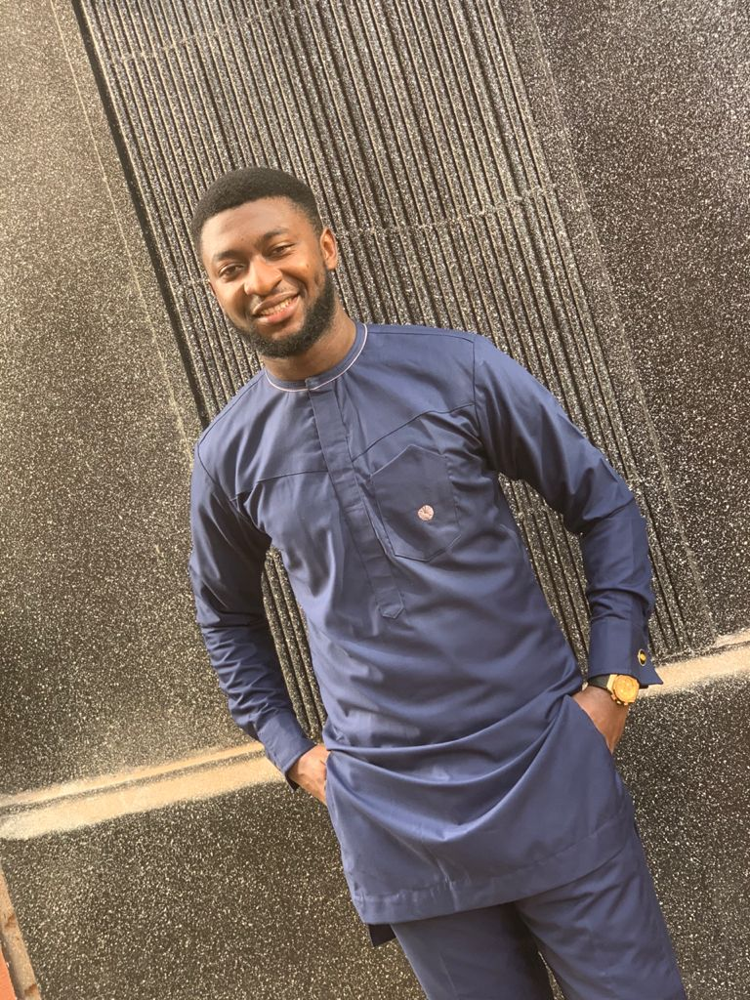

My name is Ezeanwe Kenechukwu
Hailing from the southeastern part of Nigeria, Anambra state...to be precise, I'm a student of one of the prestigious universities in that part of the country. Had a thing for ICT all along and really hope to see myself highly placed in the tech industry in the near future
I'm yet to complete any any tangible project but I hope that with the help of the zuri program, i will find myself there.